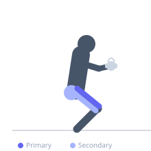
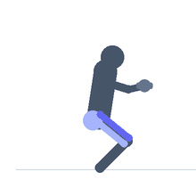

Exercise guide / Goblet Squat
Goblet Squat
The goblet squat is a beginner-friendly squat variation in which a single kettlebell or dumbbell is held at chest height with both hands. The front-loaded weight counterbalances the lifter and encourages a more upright torso, making it an excellent teaching tool for squat mechanics and a valuable accessory exercise for quad development.
Primary muscles
rectus femoris
vastus lateralis
vastus medialis
Secondary muscles
gluteus maximus
adductor magnus
Stabilizers
erector spinae
transverse abdominis
Equipment
Kettlebell
Optional
Dumbbell (Fixed)


Starting position
- Stand with feet shoulder-width apart, toes flared outward. Hold a kettlebell or dumbbell vertically at chest height with both hands, elbows pointing down.
Setup
- No special setup needed. Hold the weight close to the chest. The front loading naturally encourages a more upright torso.
Steps
- Push the knees out in line with the toes as you descend.
- Lower until hips are at or below knee level.
- Drive through the whole foot to return to standing.
Coaching cues
- Sit between your legs, not on top of them
- Keep the weight close to your chest — do not let it drift forward
Breathing
- Inhale on descent, exhale on the ascent.
Range of motion
- Full depth, hips at or below knee level.
Tempo
- 3-1-1-0
Common mistakes
- Letting the weight pull the torso forward — keep it close to the chest
- Knees caving inward
Safety
- An excellent movement for anyone learning to squat before progressing to a barbell
Training
- hypertrophy: 10–20 reps
- endurance: 15–25 reps
- hypertrophy: 3–4 sets
- endurance: 2–4 sets
- Rest: {'hypertrophy': 90, 'endurance': 45}